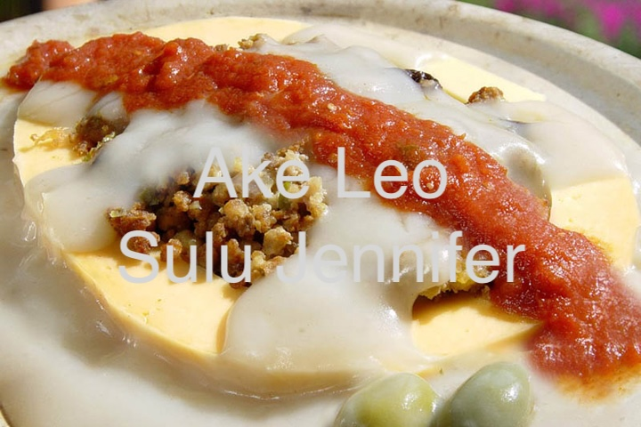
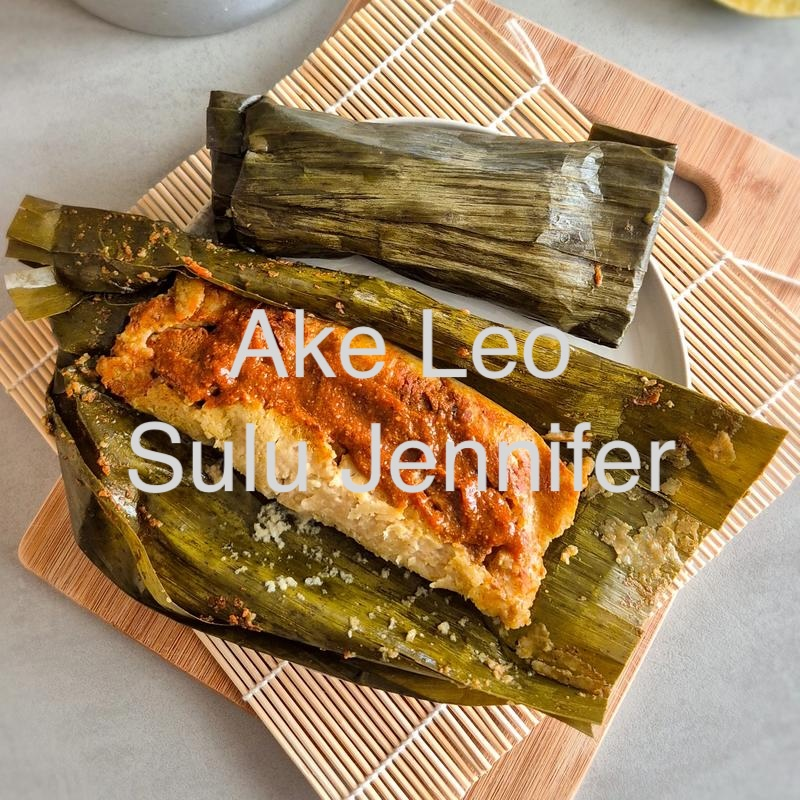
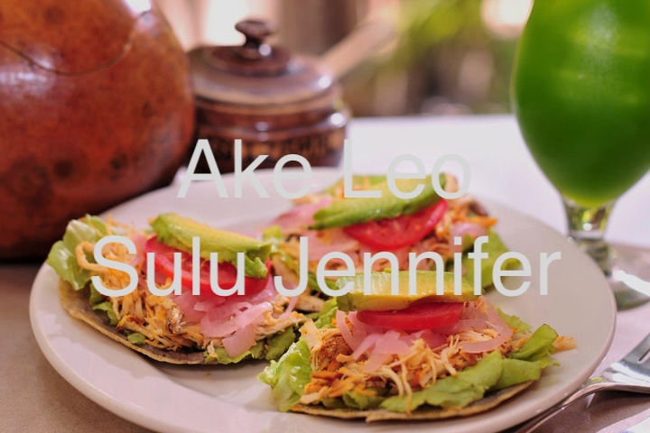

Queso Relleno
Consiste en una pieza de queso de bola ahuecada y
rellena de picadillo de carne, y presentada en una salsa de
harina de trigo llamada en maya kol y salsa de jitomate.
La gastronomía de Mérida destaca por su herencia maya y mestiza,
utilizando ingredientes como el achiote, la naranja agria y el
chile habanero. Los platillos imperdibles incluyen la cochinita
pibil, los panuchos, la sopa de lima y el queso relleno.
La inigualable conjunción de condimentos y especias tales como
la pepita de calabaza, el orégano, la cebolla morada, la naranja
agria, el chile dulce, la lima, el tomate, el achiote, el chile
xcat, el chile habanero, el chile max y el cilantro, le dan ese
sazón tan especial a la comida de esta región, que alguna vez
fue conocida como "la tierra del faisán y del venado" por utilizar
estas especies como ingredientes principales de los manjares que
aquí se preparaban. Actualmente, éstos han sido sustituidos por
carne de cerdo y pavo, y se han agregado diversos condimentos
Algunos platillos típicos yucatecos son:

Consiste en una pieza de queso de bola ahuecada y
rellena de picadillo de carne, y presentada en una salsa de
harina de trigo llamada en maya kol y salsa de jitomate.

Elaborado a partir de una masa de harina de maíz sazonada y
envuelta en hojas de plátano o de la mazorca del maíz, y
cocida al vapor o en el horno.

Es una tortilla de maíz gruesa que se abre por la mitad para rellenarla con frijoles negros refritos, se fríe ligeramente y se cubre con carne y demás ingredientes en la parte superior.